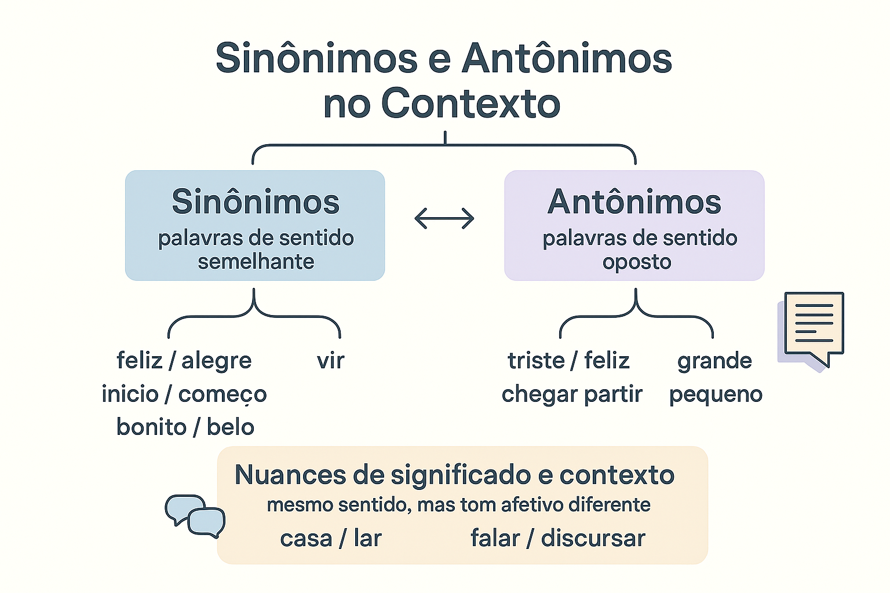

Sinônimos e Antônimos no Contexto: Relações de Sentido, Nuances e Enriquecimento Vocabular
No processo de leitura e na produção de textos de alto rendimento, o domínio do vocabulário não se resume a acumular uma lista quantitativa de palavras difíceis ou arcaicas. A verdadeira proficiência linguística reside na capacidade de perceber as sutilezas e nuances de sentido que emergem na interação comunicativa. Nesse território, a sinonímia (relação de proximidade conceitual) e a antonímia (relação de oposição e contraste) constituem duas das engrenagens mais poderosas para conferir precisão, fluidez, expressividade e coesão textual ao discurso.
Longe de operarem como meras tabelas mecânicas de "palavras iguais" ou "palavras contrárias", os sinônimos e antônimos só ganham vida plena quando articulados ao contexto de uso. Como adverte a linguista Irandé Antunes (2003, p. 89), "o sentido de uma palavra não é uma etiqueta pré-fabricada e invariável; ele se constrói na trama discursiva, em consonância com as intenções do autor, o gênero textual e o perfil do leitor".
Aprender a selecionar o termo exato em vez de aceitar a primeira palavra que vem à mente é o segredo para transformar rascunhos truncados e repetitivos em textos elegantes e convincentes, atendendo aos mais rigorosos critérios avaliativos de exames como o ENEM, os vestibulares e a produção acadêmica.

A dinâmica do significado: além da simples troca de palavras
Na tradição semântica (LYONS, 1977; ULLMANN, 1982), considera-se que os vocábulos não possuem apenas um núcleo referencial denotativo; eles carregam valores afetivos, níveis de formalidade, colorações estilísticas e restrições de combinação sintática:
Sinonímia no Contexto (Proximidade e Matiz)
Relação entre dois ou mais termos que compartilham traços semânticos centrais, podendo alternar-se sem destruir a verdade do enunciado, mas gerando modulações expressivas.
Nuance afetiva: Casa (neutro/físico) × Lar (acolhimento/família).
Nuance de formalidade: Falar (registro comum) × Discursar (solene/oratório).
Nuance de intensidade: Gostar × Apreciar × Venerar.
Antonímia no Contexto (Oposição e Tensão)
Relação de contraste entre termos que ocupam posições polares ou inversas em uma mesma dimensão conceitual, evidenciando conflitos e distinções lógicas.
Oposição binária: Vivo × Morto (sem meio-termo).
Oposição gradual: Frio × Morno × Quente (admite escala).
Oposição relacional: Comprar × Vender (perspectivas recíprocas).
A ilusão do "sinônimo perfeito"
Linguistas e lexicógrafos são unânimes: a sinonímia perfeita é praticamente inexistente nas línguas naturais. Se duas palavras tivessem exatamente o mesmo significado, a mesma carga emocional, o mesmo nível de formalidade e as mesmas restrições de uso em 100% dos contextos, uma delas se tornaria economicamente supérflua e desapareceria com o tempo. A riqueza da língua reside justamente nas diferenças sutis que distinguem um termo de seu par aparente.
O perigo do "efeito dicionário de sinônimos"
Substituir palavras utilizando dicionários sem considerar o contexto pode deformar o sentido do texto. Por exemplo, os termos forte e potente são sinônimos ao qualificar um automóvel (carro forte / potente). No entanto, não dizemos "tomei um café potente", mas sim "café forte". Essas afinidades obrigatórias de combinação chamam-se colocações lexicais e devem ser rigorosamente respeitadas para evitar estranheza na leitura.
Mapeamento de nuances semânticas em pares sinonímicos
A tabela a seguir demonstra como vocábulos que compartilham o mesmo conceito de base diferem profundamente quanto ao tom, registro e intenção argumentativa:
| Conceito Nuclear | Par Sinonímico | Diferença de Nuance e Registro | Exemplos de Aplicação Textual Adequada |
|---|---|---|---|
| Término da Vida | Falecer × Morrer × Bater as botas | Falecer expressa respeito solene e distanciamento formal; morrer é biologicamente neutro; bater as botas é gíria coloquial jocosa. | • Editorial de luto: "Faleceu hoje o emérito professor." • Notícia médica: "O paciente morreu de causas naturais." |
| Moradia | Residência × Casa × Barraco | Residência é burocrático e jurídico; casa é padrão denotativo; barraco carrega forte conotação de precariedade habitacional ou informalidade. | • Texto judicial: "Concedeu mandado na residência do réu." • Crônica social: "Construiu seu barraco na encosta do morro." |
| Inteligência | Sábio × Esperto × Astuto | Sábio evoca profundidade moral e acúmulo de vivência; esperto sugere agilidade prática imediata; astuto conota manha e capacidade de ludibriar. | • Ensaio filosófico: "O sábio prefere o silêncio." • Narrativa de suspense: "O ladrão foi astuto ao despistar os cães." |
| Rapidez | Sucinto × Rápido × Apressado | Sucinto qualifica síntese elegante e precisa; rápido denota velocidade física ou temporal; apressado conota descuido e precipitação negativa. | • Redação formal: "Apresentou um parecer sucinto." • Crítica de processo: "Tomou uma decisão apressada e falhou." |
Reescrita textual: da redundância empobrecedora à precisão estilística
A principal utilidade prática dos sinônimos e antônimos revela-se na etapa de reescrita e lapidação de textos. A repetição exaustiva de adjetivos vagos e hiperutilizados (como bom, ruim, grande, coisa, fazer) esvazia a força comunicativa de qualquer parágrafo.
Exercício Prático de Reescrita Textual
Versão Bruta (Repetitiva e Empobrecida):
"O filme exibido ontem foi muito bom, a atuação do protagonista foi muito boa e o diretor fez um trabalho bom, mas o final foi ruim porque terminou de um jeito ruim."
Versão Lapidada (Mobilização de Sinônimos e Nuances Contextuais):
"O filme exibido ontem foi memorável: a atuação do protagonista mostrou-se comovente e a direção revelou-se impecável. Em contrapartida, o desfecho soou frustrante em razão de um encerramento abrupto."
Ganhos Semânticos: A substituição dos termos genéricos (bom/ruim) por vocábulos específicos qualifica com rigor cada aspecto da obra estética, transformando uma opinião infantilizada em uma crítica cinematográfica madura e articulada.
O poder argumentativo da antonímia: o contraste como recurso persuasivo
Em textos dissertativo-argumentativos, a exploração deliberada de antônimos é uma das estratégias retóricas mais eficazes para evidenciar contradições estruturais da sociedade:
- Confronto de realidades socioeconômicas: "Enquanto uma minoria usufrui de abundância alimentar e luxo ostensivo, a esmagadora maioria da população sobrevive na mais degradante escassez nutricional."
- Exposição de impasses políticos: "A legislação brasileira destaca-se pelo seu caráter progressista no papel; na prática cotidiana das periferias, todavia, vigora uma realidade arcaica e reacionária."
- Sustentação de teses por oposição: O choque de termos contrários desperta a indignação moral do leitor e reforça a urgência das intervenções propostas pelo autor.
Atividade prática: o laboratório lexical em sala de aula
Roteiro de Fixação: Três Níveis de Substituição Vocabular
Para desenvolver a sensibilidade leitora e vocabular dos estudantes diante de um mesmo enunciado base:
- Nível 1 - Manutenção de Sentido com Elevação de Registro:
Base: "O cientista descobriu a cura da doença."
Reescrita: "O cientista desvendou / elucidou a cura da enfermidade." (Preserva o valor cognitivo central e enriquece a formalidade). - Nível 2 - Deslocamento Semântico Crítico (Mudança de Julgamento de Valor):
Base: "O deputado foi firme em seu discurso."
Variação A (Elogio): "O deputado foi resoluto / corajoso em sua fala."
Variação B (Crítica): "O deputado foi intransigente / autoritário em sua manifestação." (A escolha do sinônimo parcial orienta ideologicamente a recepção do leitor). - Nível 3 - Criação de Tensão por Antítese:
Base: "A educação liberta o indivíduo."
Reescrita antitética: "A educação emancipa o cidadão, ao passo que a ignorância imposta o submete à servidão." (A oposição emancipar × submeter potencializa a força persuasiva da tese).
Esquema pedagógico: o itinerário da seleção lexical consciente
O ciclo da escolha vocabular na escrita proficiente
Detecção da palavra no rascunho (identificação de termos vagos, banais ou repetitivos) → Ativação do campo conceitual (quais sinônimos ou antônimos orbitam essa ideia?) → Filtragem contextual (qual o nível de formalidade, gênero textual e intenção emotiva?) → Teste de colocação sintática (o termo soa natural ao lado das palavras vizinhas?) → Inserção definitiva (elevação estilística e consolidação da coesão textual).
Questões para estudo e reflexão
Questão 1
Por que se afirma, na linguística contemporânea, que a substituição de uma palavra por seu suposto sinônimo quase nunca é neutra?
Ver resposta comentada
Resposta comentada: Porque as palavras carregam conotações afetivas, marcas ideológicas, níveis de formalidade e intensidades expressivas distintas. Trocar morrer por falecer altera o registro de informal/neutro para solene; trocar reivindicação por motim altera o julgamento de valor, convertendo um direito democrático em crime. A escolha sinonímica sempre orienta o ponto de vista do leitor.
Questão 2
Qual é a diferença conceitual e lógica entre antônimos contraditórios e antônimos contrários? Exemplifique.
Ver resposta comentada
Resposta comentada: Os antônimos contraditórios (binários) formam uma oposição excludente que não admite meio-termo ou gradação: a afirmação de um implica obrigatoriamente a negação do outro (ex.: par × ímpar, vivo × morto). Os antônimos contrários localizam-se nas extremidades de uma escala contínua que admite graus intermediários (ex.: rico × pobre, que admite remediado ou classe média; quente × frio, que admite morno).
Questão 3
O que são "colocações lexicais" e de que maneira elas impõem limites ao uso irrestrito de sinônimos?
Ver resposta comentada
Resposta comentada: Colocações lexicais são preferências consagradas pelo uso cultural da língua para a combinação harmoniosa de certas palavras. Mesmo que dois termos sejam sinônimos conceituais em abstrato, eles não podem ser intercambiados livremente se romperem as colocações típicas da língua (por exemplo: dizemos "cometer um crime" ou "cometer um erro", mas soaria estranho dizer "fazer um crime" ou "praticar um café").
Questão 4
Como o recurso à antonímia pode potencializar a tese na introdução de uma redação nota 1000 do ENEM?
Ver resposta comentada
Resposta comentada: A introdução torna-se mais contundente quando o candidato utiliza a antonímia para estruturar uma antítese entre a teoria legal e a prática cotidiana (ex.: confrontar a universalidade dos direitos previstos na Constituição Federal com a segregação real enfrentada por minorias sociais). O contraste evidencia o problema de forma nítida e justifica a urgência do debate argumentativo.
Questão 5
De que maneira a substituição sinonímica atua na coesão anafórica textual avaliada na Competência 4 do ENEM?
Ver resposta comentada
Resposta comentada: A substituição sinonímica permite ao candidato retomar ideias, teses ou sujeitos já apresentados nos parágrafos anteriores sem incorrer em repetição vocabular exaustiva e empobrecedora. Esse mecanismo assegura a continuidade temática do texto e demonstra repertório linguístico diversificado e domínio seguro dos recursos coesivos da norma-padrão.
Resumo sobre sinônimos e antônimos no contexto
- A sinonímia diz respeito à afinidade e semelhança semântica entre vocábulos distintos;
- A antonímia abrange relações de oposição, desdobrando-se em contraditória (binária estrita), contrária (gradual) e recíproca (conversos);
- A sinonímia perfeita é praticamente inexistente: os termos divergem em formalidade, intensidade, carga afetiva e colocação;
- O recurso desenfreado a dicionários de sinônimos descontextualizados pode comprometer a naturalidade e a precisão do texto;
- Na reescrita textual, a diversificação lexical elimina repetições enfadonhas e afina o julgamento de valor do autor;
- A exploração de contrastes antinômicos fortalece a sustentação de teses na redação dissertativo-argumentativa;
- O domínio dessas relações léxicas é decisivo para a obtenção de nota máxima nas Competências 1, 3 e 4 do ENEM.
Perguntas frequentes sobre sinonímia e antonímia
O que são sinônimos contextuais?
São palavras que, embora não sejam rigorosamente sinônimas no dicionário quando isoladas, tornam-se equivalentes em um contexto específico de fala ou escrita (ex.: em "O médico examinou o ferimento / O doutor examinou o machucado").
O que são antônimos recíprocos?
São palavras que expressam a mesma relação social ou física a partir de pontos de vista inversos e dependentes entre si, como ensinar e aprender, comprar e vender, médico e paciente.
Por que não devemos trocar palavras apenas para "parecer culto"?
Porque o uso forçado de sinônimos raros ou rebuscados fora de contexto gera pedantismo, afeta a naturalidade da leitura e pode provocar erros de regência ou inadequação semântica grave. A clareza deve sempre preceder o ornamento.
Como os antônimos criam figuras de linguagem na literatura?
A aproximação deliberada de palavras antônimas dá origem à antítese (contraste harmônico de ideias, como luz e sombra) e ao paradoxo ou oximoro (fusão de ideias aparentemente inconciliáveis, como "fogo que arde sem se ver").
Qual a diferença entre sinônimos de registro e sinônimos de intensidade?
Sinônimos de registro variam quanto ao grau de formalidade social (ex.: garoto [neutro] e moleque [coloquial]). Sinônimos de intensidade variam na força da emoção ou tamanho expresso (ex.: medo, pavor e terror).
Como os sinônimos ajudam a evitar repetições no ENEM?
Eles permitem que o candidato retome a palavra-chave do tema (como educação ou tecnologia) por meio de termos equivalentes (como ensino, instrução, formação escolar ou dispositivos digitais, ecossistema virtual), garantindo progressão fluida.
Existe antônimo para todas as palavras da língua portuguesa?
Não. Substantivos que nomeiam objetos materiais concretos (como mesa, lápis, árvore, pedra) geralmente não possuem antônimos naturais, pois a oposição semântica ocorre primordialmente em qualidades, estados e ações graduáveis.
Como o contexto decide se uma palavra é antônima de outra?
Em virtude da polissemia, o antônimo de uma palavra varia conforme o sentido ativado: o antônimo de claro em "dia claro" é escuro; já em "explicação clara", o antônimo é confusa ou obscura.
Considerações finais
O estudo e a aplicação dos sinônimos e antônimos no contexto demonstram que a linguagem é um organismo infinitamente maleável e expressivo. Cada escolha lexical feita pelo escritor é um ato consciente de posicionamento: ao selecionar um termo e descartar outro aparentemente semelhante, demarcamos nosso tom, estabelecemos nossa proximidade com o leitor e definimos o peso argumentativo de nossas ideias.
Longe de ser um exercício mecânico de memorização para testes gramaticais, a exploração lúcida das relações de semelhança e contraste vocabular constitui o verdadeiro alicerce do pensamento crítico e da escrita autônoma, capacitando o cidadão a transitar com segurança e sofisticação pelos mais desafiadores palcos da comunicação humana.
Conteúdos relacionados
- Noções Iniciais de Semântica: o Significado nas Palavras
- Relações Semânticas no Léxico: Conexões de Sentido e Coesão
- Denotação e Conotação: Sentidos Literal e Figurado na Linguagem
- Sentido Literal e Sentido Figurado: Mecanismos e Expressividade
- Ambiguidade e Inferência Semântica no Contexto Textual
- Campo Semântico e Campo Lexical: Redes e Famílias de Palavras
- Polissemia e Homonímia: Fenômenos dos Múltiplos Sentidos
- Semântica — Índice Completo de Conteúdos
Referências
- ANTUNES, Irandé. Muito além da gramática: por um ensino de línguas sem pedras no caminho. São Paulo: Parábola Editorial, 2003.
- BAGNO, Marcos. Gramática pedagógica do português brasileiro. São Paulo: Parábola Editorial, 2012.
- BECHARA, Evanildo. Moderna gramática portuguesa. 39. ed. Rio de Janeiro: Nova Fronteira, 2019.
- CANÇADO, Márcia. Manual de semântica: noções básicas e exercícios. 3. ed. São Paulo: Contexto, 2012.
- CUNHA, Celso; CINTRA, Lindley. Nova gramática do português contemporâneo. 7. ed. Rio de Janeiro: Lexikon, 2017.
- ILARI, Rodolfo; GERALDI, João Wanderley. Semântica. 11. ed. São Paulo: Ática, 2006.
- LYONS, John. Semantics. Cambridge: Cambridge University Press, 1977. v. 1 e 2.
- ULLMANN, Stephen. Semântica: uma introdução à ciência do significado. 5. ed. Lisboa: Fundação Calouste Gulbenkian, 1982.
Explore Outros Conteúdos
Continue seus estudos acessando outras seções do site Mestre Kira:
Explore Outros Conteúdos
Continue seus estudos acessando outras seções do site Mestre Kira: